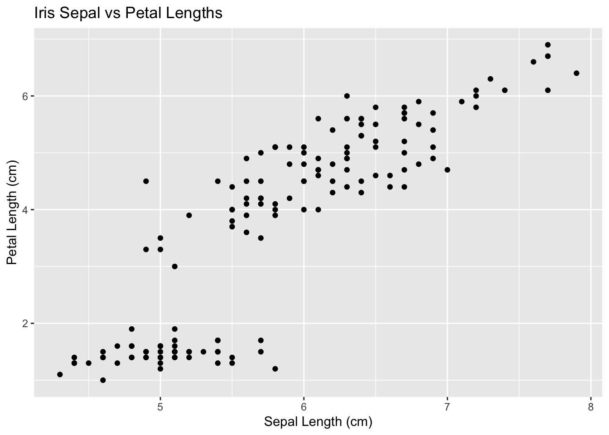
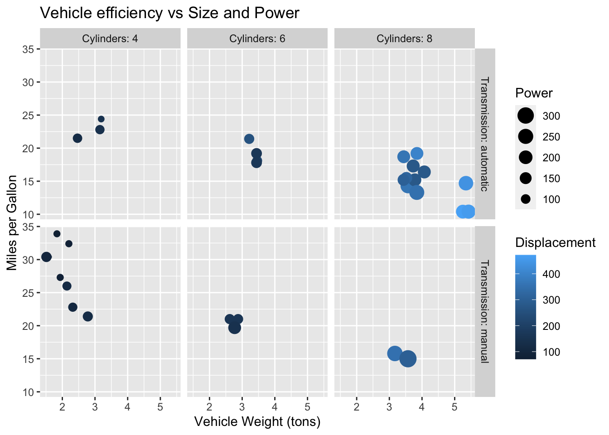
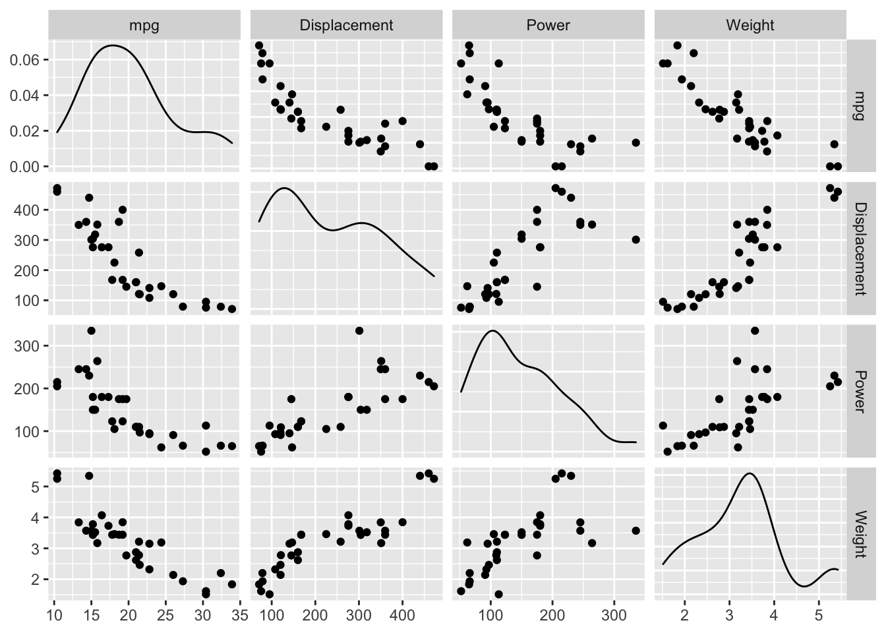
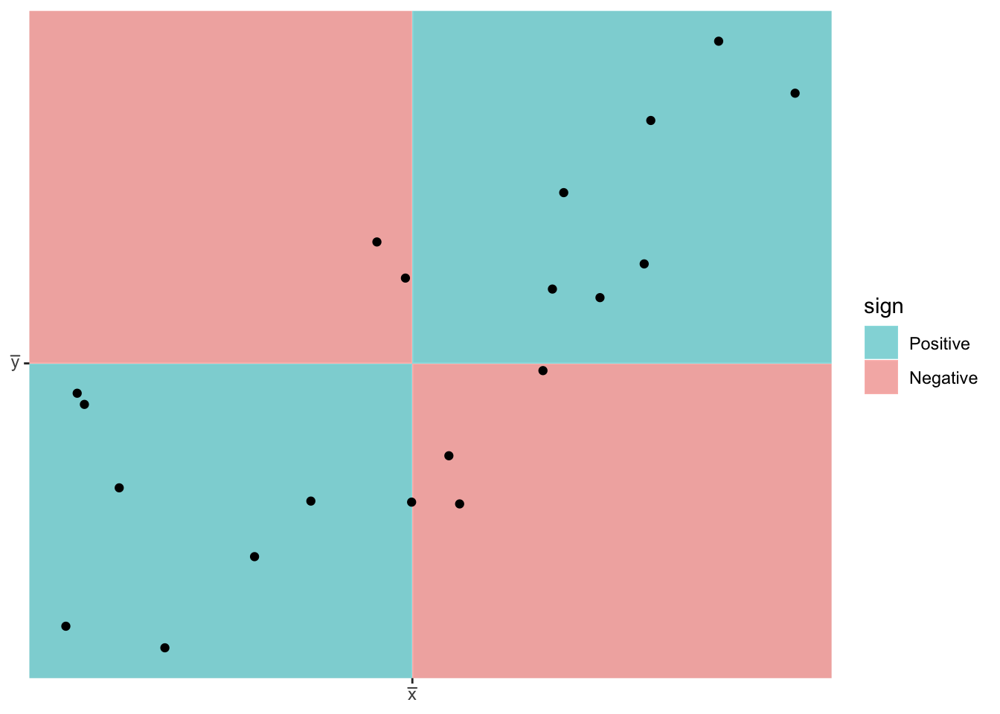
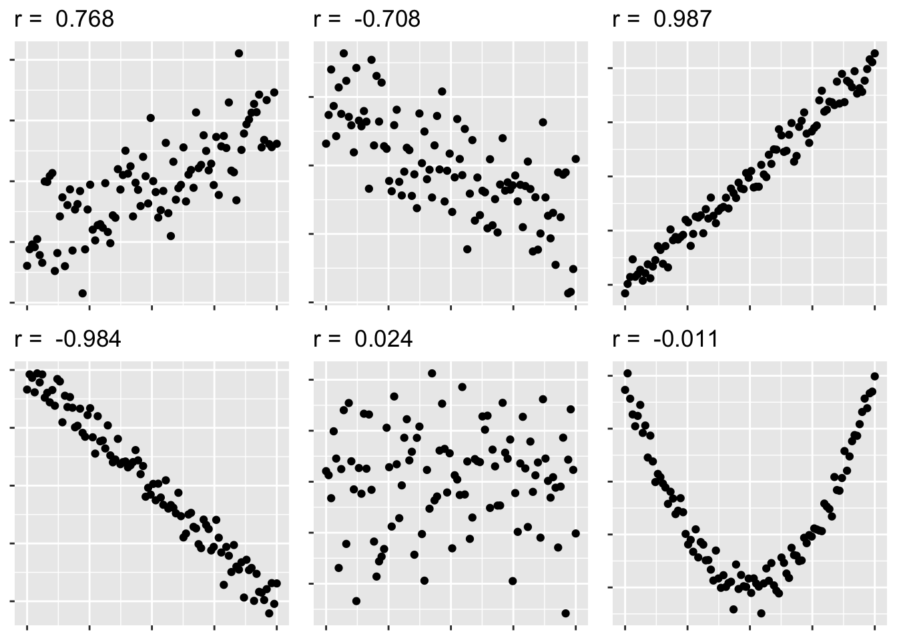
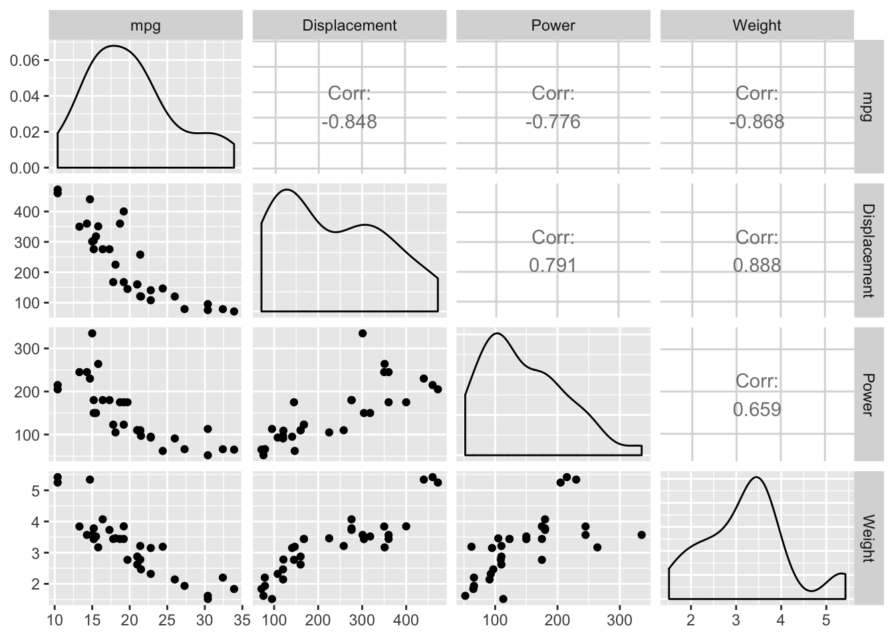
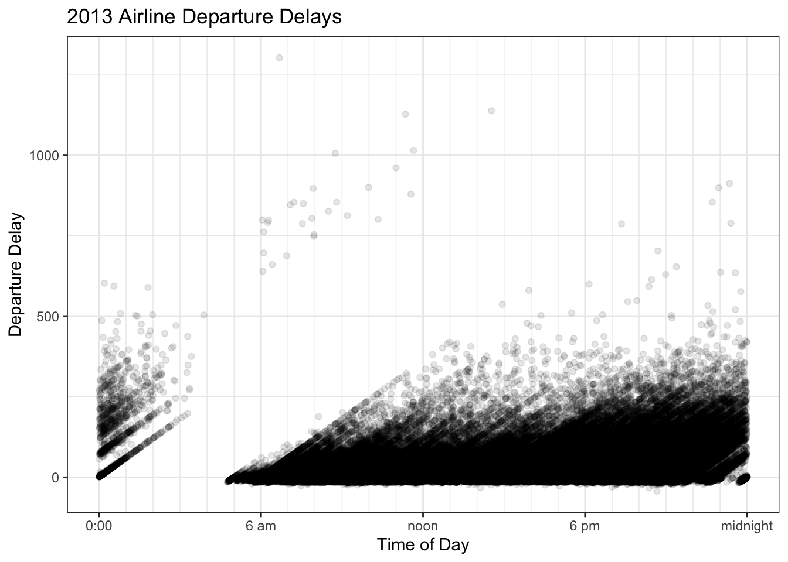
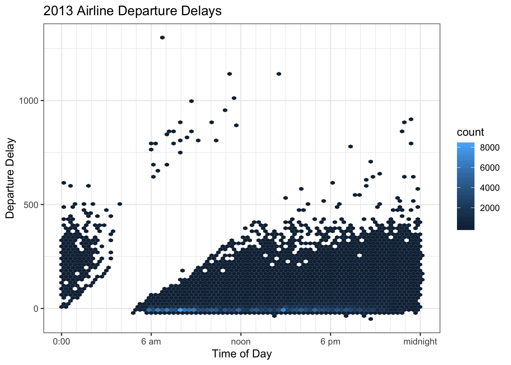
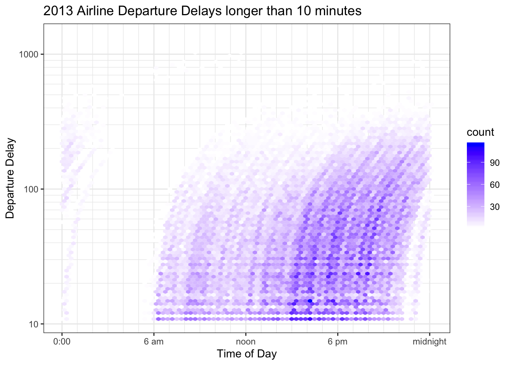
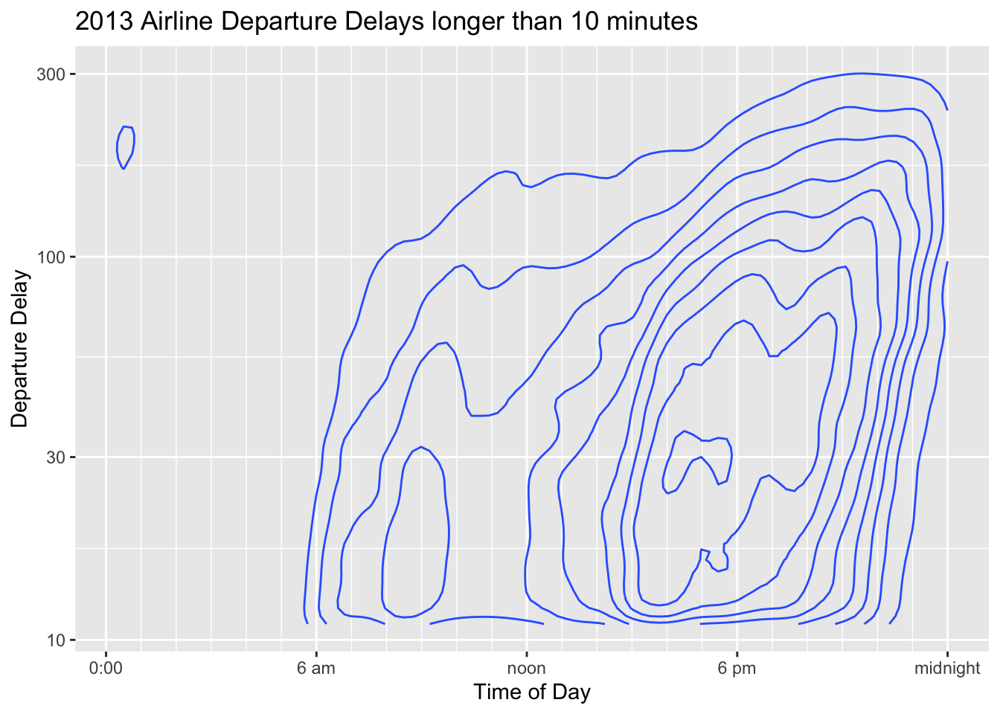

Chapter 5 X-Y Relationships
5.1 Scatter plots
Basic idea is to build off of a scatter plot. This visualizes the relationship between two continuous variables.

In a scatter plot we can see the relationship between two variables. We can see the relationship among more variables (either continuous or discrete) by adding Size, Color, and Shape.
We could also add other categorical variables by adding faceting. With this combination we can visualize the relationship between up to 6 different variables.

5.1.1 Pairs plots (All-vs-all scatterplots)
Sometimes we have a dataset with several different variables of quantitative variables. One thing we could do is just make all possible pairs of scatterplots. In a pairs plot, we make a grid of graphs where x-axis or y-axis remains consistent as we move across the columns or rows of the grid. 
5.2 Correlation Plots
5.2.1 Pearson’s Correlation Coefficient
We first consider Pearson’s correlation coefficient, which is a statistics that measures the strength of the linear relationship between the predictor and response. Consider the following Pearson’s correlation statistic \[r=\frac{\sum_{i=1}^{n}\left(\frac{x_{i}-\bar{x}}{s_{x}}\right)\left(\frac{y_{i}-\bar{y}}{s_{y}}\right)}{n-1}\] where \(x_{i}\) and \(y_{i}\) are the x and y coordinate of the \(i\)th observation. Notice that each parenthesis value is the standardized value of each observation. If the x-value is big (greater than \(\bar{x}\)) and the y-value is large (greater than \(\bar{y}\)), then after multiplication, the result is positive. Likewise if the x-value is small and the y-value is small, both standardized values are negative and therefore after multiplication the result is positive. If a large x-value is paired with a small y-value, then the first value is positive, but the second is negative and so the multiplication result is negative.

The following are true about Pearson’s correlation coefficient:
- \(r\) is unit-less because we have standardized the \(x\) and \(y\) values.
- \(-1\le r\le1\) because of the scaling by \(n-1\)
- A negative \(r\) denotes a negative relationship between \(x\) and \(y\), while a positive value of \(r\) represents a positive relationship.
- \(r\) measures the strength of the linear relationship between the predictor and response.


5.3 Overplotting
5.3.1 Transparency
Wilke’s book uses and example of departure time of day versus the delay amount for all the flights out of New York City in 2013. The story to take home is that longer delays tend to happen later in the afternoon or evening rather than in the morning. Wilke uses these data to argue that overplotting is annoying and that a heat map can help out.

5.3.2 Intensity Maps
No matter how much we adjust the transparency, we can’t really fix this because there is so much data. If for each area on the graph, we count how many observations fall into the region, we can color the area based on how many observations are in the region.

This graph leads me to think that MOST flights are quite late, when if fact, they aren’t. This is due to the problem of “proportional pixels”. There is so much space and color devoted to flights that are more than 30 minutes late that the viewer can’t help but have that impression.
| delay | n | proportion |
|---|---|---|
| (-30,-10] | 12465 | 0.03794 |
| (-10,0] | 187620 | 0.5711 |
| (0,10] | 45598 | 0.1388 |
| (10,30] | 34543 | 0.1051 |
| (30,60] | 21710 | 0.06608 |
| (60,120] | 16858 | 0.05132 |
| (120,180] | 5830 | 0.01775 |
| (180,Inf] | 3893 | 0.01185 |
Because we are interested in the time distribution of significant delays, and early departures are usually only by a couple of minutes, we’ll we’ll take a log\(_{10}\) transformation of all the delays greater than 10 minutes. We’ll also modify the color scale so that hexagons with a small count fade into the background and are white and hexagons with relatively large counts have a noticable color.

5.3.3 Contour Plots
Contour plots are similar to density plots, but for two-axis. The lines mark out regions of similar probability and we read it similarly as a topological map that shows elevation. In this case we can see that the most frequent delays are around 30 minutes long and occur near 5 pm. There is also a local peak of 20 minute delays around 10 am.

5.4 Exercises
Read Chapters 12 and 18 from Wilke’s book. Feel free to skip section 12.3.
We will use a smaller version of the diamonds dataset that Wilke uses in his Chapter 18. You can download it from my GitHub site in a .csv file. We will examine price, carats, cut (Fair, Good, Very Good, Premium, and Ideal), color (J - D), and clarity (I1, SI2, SI1, VS2, VS1, VVS2, VVS1, IF), where the category labels I’ve given are from worst to best.
- Had I not told you that clarity level IF is the best clarity, what graphs could you make to figure that out? Create and show a graph that demonstrates this and explain your graph.
- If the diamond clarity isn’t good, the dimond cutter won’t worry too much about the quality of cut. Make a graph that demonstrates that and explain your reasoning.
- While in principle it is possible for the dimond carats to be any number, they are often cut to be some common carat size. Create a visualization that shows this and discuss how the carat size changes as the cut and clarity improve.
From the Gapminder.com website, I’ve downloaded a bunch of interesting covariates about countries. You can find my dataset at my GitHub site in a .csv file. The variables I’ve included include the country region, year, population size, population growth, percent of population with basic sanitation, GDP per capita, Total GDP, life expectancy, adult male and female labor force participation rates. Fertility is the number of children per woman, so a fertility rate of 2 children per woman is a stable population.
- For all the following questions, only consider the year 2015.
- Investigate the relationship between GDP and GDP_per_capita. Why should we prefer to work with GDP_per_capita when comparing standards of living between, say, the United States and Canada?
- Investigate the relationship between life expectancy, fertility, and GDP_per_capita. Do these relationships seem to vary by region? Comment on your graphs and relationships that you observe.
- Investigate the relationship relationship between life expectancy, adult female labor force participation and fertility. Does this vary by region? Comment on your graphs and relationships that you observe.